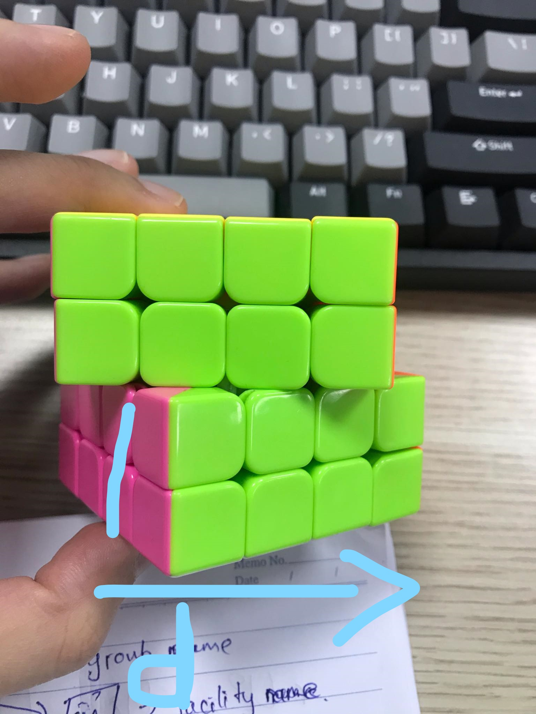
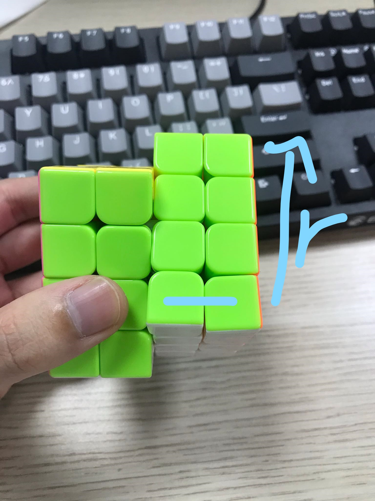
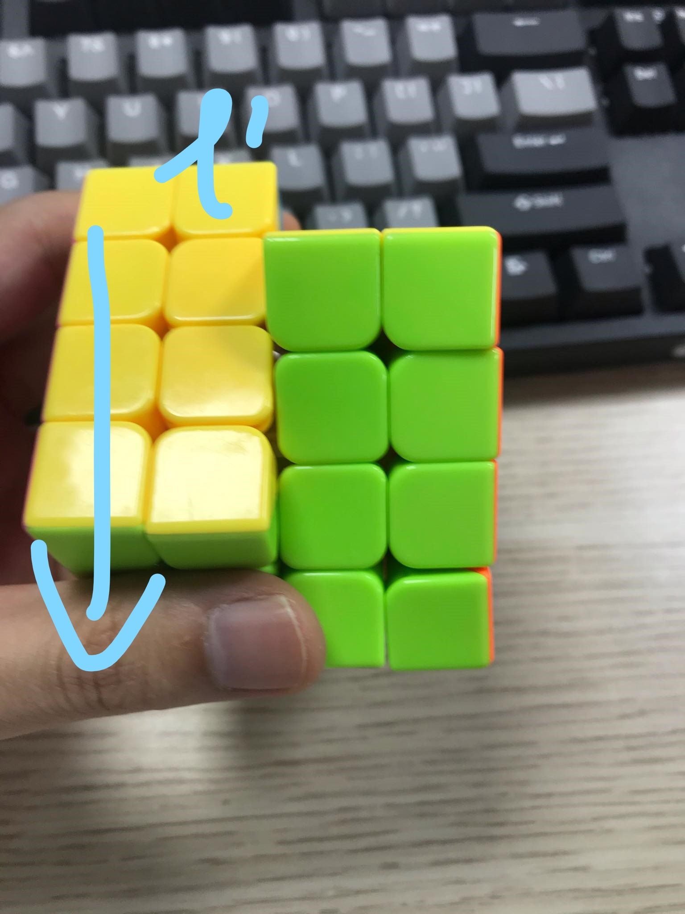
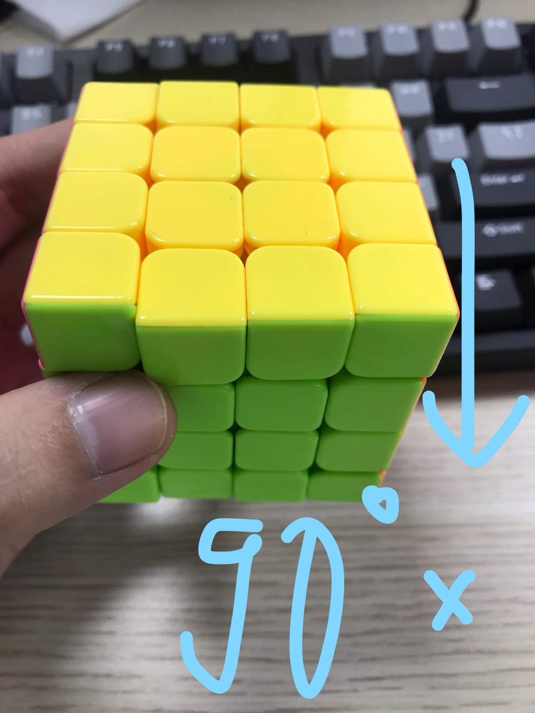
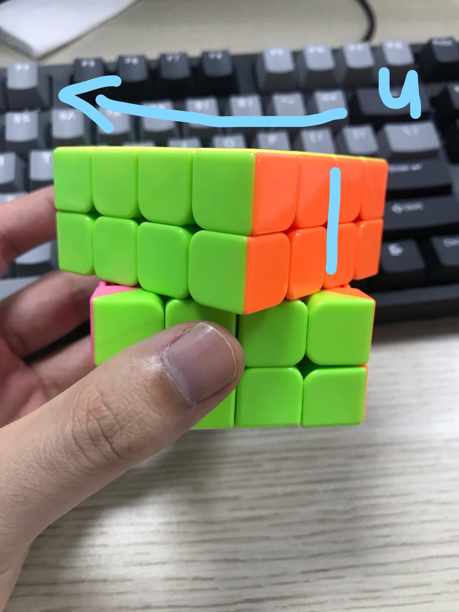
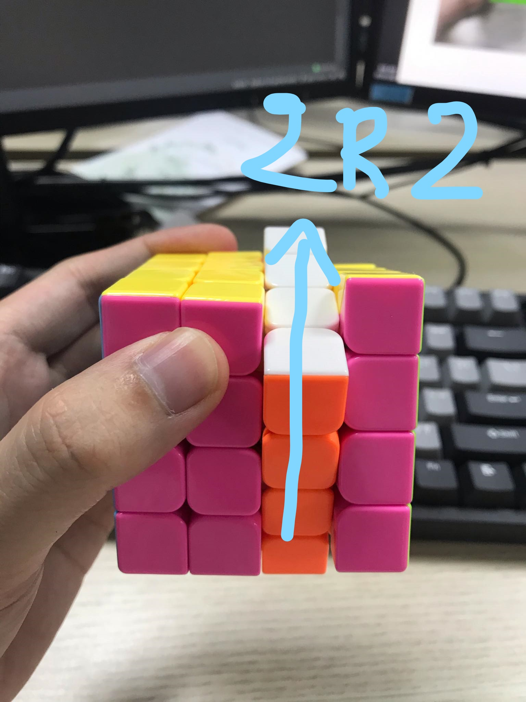

Công Thức quay rubik 4x4
B1: Quay tâm chú ý thứ tự, Trắng đối vàng quay trước, xanh biển (dưới trắng)- Đỏ - xanh lá - da cam ---------------------------------------- B2: Lấy các cạnh hợp nhau: d RUR' FR'F'R d'  ---------------------------------------- B3: Gép góc mặt trắng ---------------------------------------- B4: Gép cạnh tầng 2-3 Trái : U'L' UL UF U'F Phải : UR U'R U'F UF ---------------------------------------- B5: Lấy dấu cộng FRU R'U'F' Note: Trường hợp đặc biệt rU2 x rU2 rU2 r'U2 l'U2r' U2r U2r' U2r' x: quay 90 độ với mặt đang để    ---------------------------------------- B6: ghép mặt vàng : RUR' UR U2 R' ---------------------------------------- B7: Hoán vị góc: RUR'F' RUR'U' R'F R2U' R'U' ---------------------------------------- B8: Hoán vị cạnh: R2 URU R'U' R'U' R'UR' Note: trường hợp đặc biệt (2 cạnh cần hoán vị đối diện nhau) 2 R2 U2 2R2 u2 2R2 u2 2R2 u2  